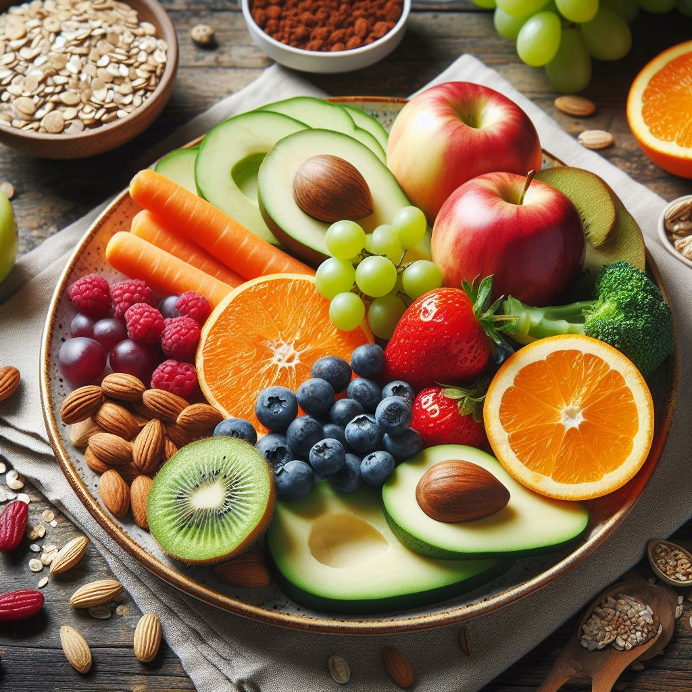
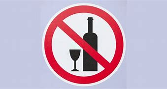

Taking preventive measures is crucial for maintaining Good health. Here are some strategies to help preventing Breast Cancer:


Diet: Consume a nutritious diet rich in fruits, vegetables, whole grains, and lean proteins. Limit processed foods, sugary drinks, and high-fat items.
Alcohol: Minimize alcohol consumption or avoid it altogether.
Physical Activity: Regular exercise can be protective. Aim for at least 150 minutes of moderate-intensity aerobic activity per week.
Weight Management: Maintain a healthy weight, as obesity is associated with an increased risk of breast cancer.
Avoid Smoking: Quit smoking if you currently smoke.
Breastfeeding: If possible, breastfeed your child. Breastfeeding has been linked to a reduced risk of breast cancer.
Genetic Counseling and Testing: If you have a strong family history of breast cancer or specific gene mutations, consider genetic counseling and testing.
Medications like tamoxifen and raloxifene may be prescribed for those at higher risk.
Close Observation: Regularly monitor your breasts for any changes. Be aware of early signs of breast cancer, such as lumps, skin changes, or nipple discharge.
Preventive Surgery: In cases of high genetic risk, prophylactic mastectomy (removal of breast tissue) may be advised.